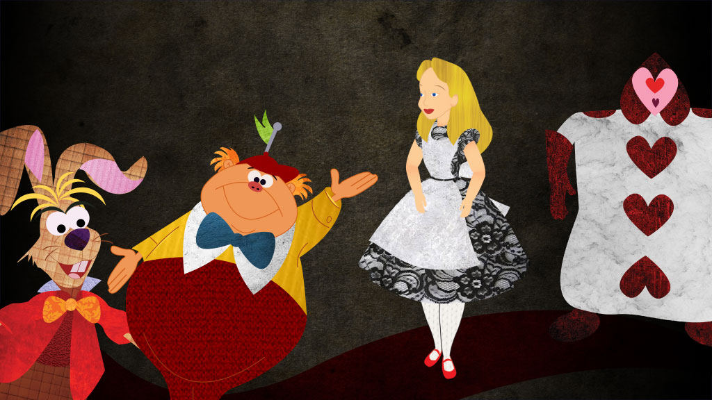

​<!DOCTYPE html>
<html>

	<head>

	<link rel="stylesheet" type="text/css" href="style.css">
	<link href="https://fonts.googleapis.com/css?family=Amatic+SC|Solway&display=swap" rel="stylesheet"> </head>


<body>
	<audio id= "audioPlayer">
    <source id= "wordAudio" type="audio/wav">
     Your browser does not support the audio tag.
    </audio>


	<span id="title" style=" font-size: 100px;">Alice In Wonderland</span>

<!-- <a href="index.html"><div id="arrowleft"></div></a> -->


		<div id="backgroundimg">
			<div class="container">
  				
  			</div>
  		</div>


		<div style="text-align:center;">
			<a href="page1/index.html"><button type="button" class="button">Click to Start</button> </a>
		</div>


		<script type="text/javascript">


		// Create click event that calls on class word through an array, then connected API function to add audio when specific word was clicked
		const clickWords = document.querySelectorAll('.word');
		console.log(clickWords);
		for (var i = 0; i < clickWords.length; i++) {
			console.log(clickWords[i]);
			clickWords[i].addEventListener('click', function (event) {
				callWordAPI(event.currentTarget.innerText);

			});

		}
		

		//Added API to a function
		function callWordAPI (word){
			console.log(word);

			// Created a dynamic URL based on word selection
			const url = `https://dictionaryapi.com/api/v3/references/learners/json/${word}?key=9c3a9b28-9b91-43bf-bac6-d39c1a35f8d3`;
					fetch(url, {
			'Content-Type': 'application/json'
		})

		.then((response) => {
			console.log(response);
			return response.json()
		})

		.then((data) => {
			
			//https://media.merriam-webster.com/soundc11/h/heart001.wav

			//First get filename store in a variable
			//https://media.merriam-webster.com/soundc11/h/heart001.wav
			console.log(data[0].hwi.prs[0].sound.audio);
			//console.log(data);

			//get first letter of that name. Use Substring Strore in variable (firstLetter)
			let fullWord = data[0].hwi.prs[0].sound.audio;
			console.log(fullWord.substring(0,1));
			let firstLetter = fullWord.substring(0,1);
			//build URL adding in FirstLetter and FullName
			let url = `https://media.merriam-webster.com/soundc11/${firstLetter}/${fullWord}.wav`
			//ex.  `string ${variableName} more string`

			console.log(url);
			// console.log(fullWord.substring(0,1));

			//https://media.merriam-webster.com/soundc11/h/heart001.wav

			let audioPlayer = document.querySelector("#audioPlayer");

			//function to play video
			let playAudio = () => {
				audioPlayer.play();
			}

			//Load and play from audio from audio tag
			let loadAudio = () => {
				document.querySelector("#wordAudio").src = url;
				audioPlayer.load();
				playAudio();

			}
			
			loadAudio()

		});

		}

	</script>


</body>


</html>